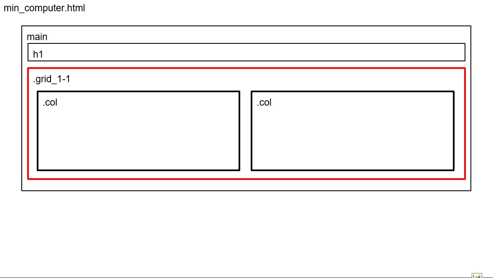
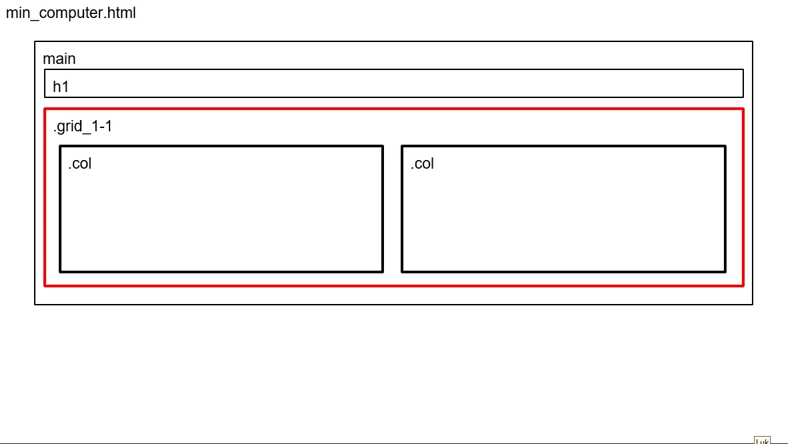

Web Basics
Before diving into this theme, we had an introductory week where we learned about creating a domain and uploading files using FileZilla. In Theme 2, we explored various tools essential for building a website, such as Figma for design and VS Code for coding. Through several exercises, we gained a deeper understanding of website structure, starting with HTML for content organization, and CSS for styling.
We began by designing a mobile-first version of the website. From there, we continued to build and expand the site, ensuring a solid structure and responsive design throughout the development process.
Layouts
Once the mobile version was complete, we adapted it for desktops, ensuring consistency with layout diagrams.
Here are the layouts we had to follow:
 

We learned how to:
• Add fonts, background colors, and images.
• Organize content using media queries for responsiveness.
• Utilize grid layouts and flexbox for better structure.
Challenges: This was a completely new experience for me, and it took some time to understand the tools and processes.
UX/UI
In this theme, we had the freedom to decide the content and purpose of our website. We began with research to identify the target audience and their needs.

We focused on structuring the website and used design techniques to ensure it was visually appealing and functional. This was followed by creating Hi-Fi and Lo-Fi wireframes to help plan our design.
Click here and check out my layouts/styletile and prototype
Using Figma, we designed and prototyped the website while learning about:
• Style tiles to define design elements.
• Hover effects for interactive images.
• Navigation linking for seamless user flow.
• Optimizing images using the WEBP format to improve page loading speed.
• Adding a favicon using favicon.io.
Challenges: Achieving the desired structure and design was more complex than expected, but it was a valuable learning experience.
Animation Process
This theme involved brainstorming and creating paper prototypes for a game. As we were in the process of brainstorming and sketching the ideas out, this is what I came with first. Where the main character is running through the bicycles street and hitting the ones who dont have helmet on with the pan.
Additionally, we were introduced to JavaScript to handle game behavior and interactivity. We used git for version control to manage different iterations of the game. To structure our work, we created Activity Diagrams using draw.io in VS Code.
These diagrams mapped out:
• When animations should start and end.
• When elements should appear or disappear.
• The integration of sounds.
Challenges: Animation and JavaScript were completely new to me, making this theme more demanding. While the project is still incomplete due to issues with the gameover and win screens, I managed to implement the game’s layout and followed structured versioning.
The elements
We used Adobe Illustrator to draw the game's elements and exported them in SVG format, which allowed us to scale the graphics without loss of quality and manipulate individual elements easily. The animations were implemented using CSS keyframes and organized within a container for better control


Goals:
• Create engaging and interactive animations.
• Learn JavaScript and combine it with CSS for dynamic content.
• Develope a game prototype using modern conventions.
• Draw vector graphics in Adobe Illustrator.
Challenges: Animation and JavaScript were completely new to me, making this theme more demanding. While the project is still incomplete due to issues with the gameover and win screens, I managed to implement the game’s layout and followed structured versioning.
Passion Site
This theme involved creating a Passion Site about someone with a strong passion for a specific subject. We focused on a girl named Viola, who shares her passion for films. We filmed an interview, where we had to use Adobe premier to cut it out and edit it to a 1 minute video. The layout was based on a predefined wireframes .
Click here to see the given wireframe
PS! This is not a finished project, its been only done partially on mobile version.
Challenges: I could have spent more time completing both the mobile and desktop versions and learning how to implement hero animations.
Group Project: Café Blue Redesign
In this theme, we worked in a group to redesign the website of Café Blue, located in the city center of Copenhagen. We started by researching nearby businesses on Google Maps and reached out to Café Blue owner, who agreed to the redesign.
The process included:
• Brainstorming by keywords, and a moodboard to capture the right atmosphere in Figma.
• Doing a site map for an overview on the website
• Creating wireframes, style tiles, and layout diagrams in Figma.
• Collaborating on git for version control.
• Creating a lottiefile for homepage
• Illustrating elements in Adobe illustrator to add it to the website.
• Creating prototypes in Figma.
• Coding, including the gallery, where I implemented a scrollable container for the café's artwork
Here you can see the full process on Figma.
We tested the redesigned site using:
• Likert Test
• 5-Second Test
• Lighthouse Test
Im sharing Likert test only since we didnt get so many answers on 5-Second test. As in Lighthouse test all of the images needed to be converted to WEBP for faster loading.

Challenges: The collaborative nature of the project introduced new challenges, but it was a great experience working with git in a team setting.